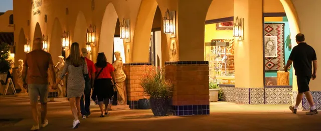
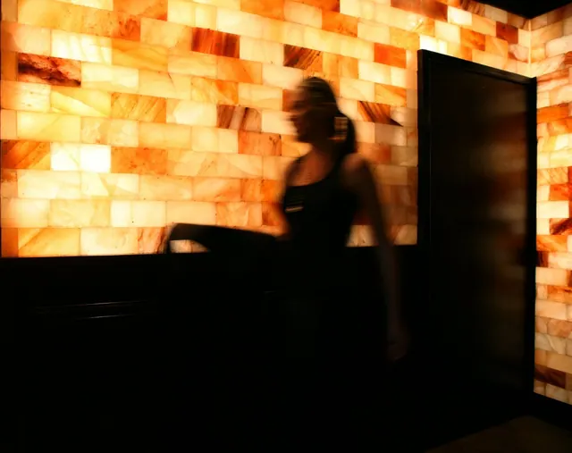
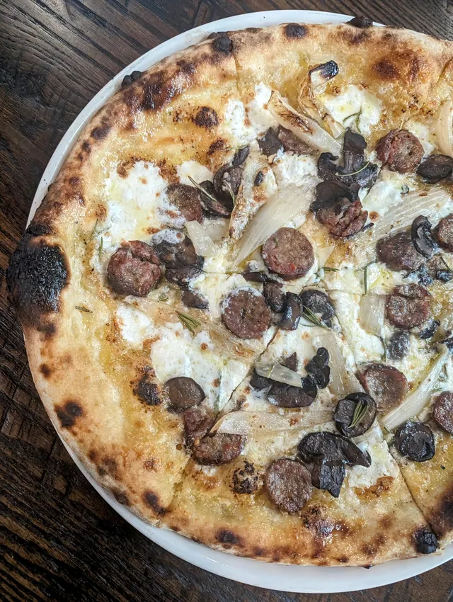
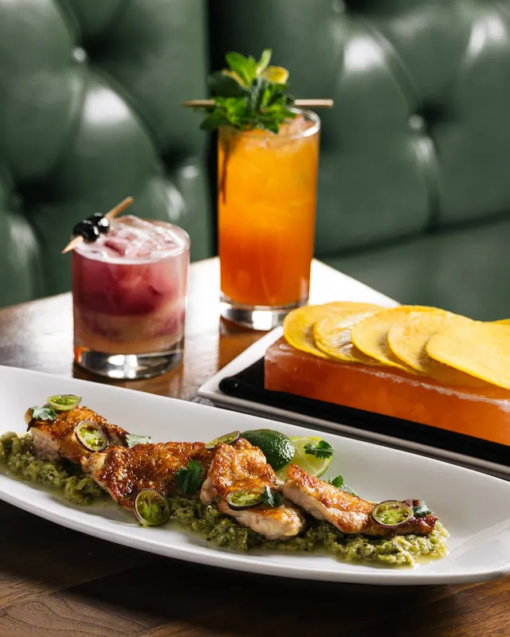
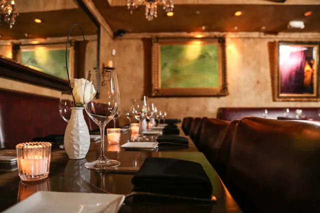
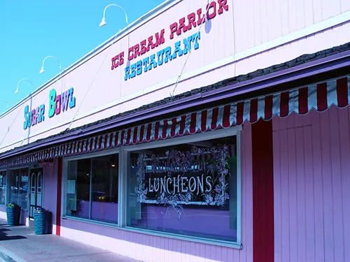
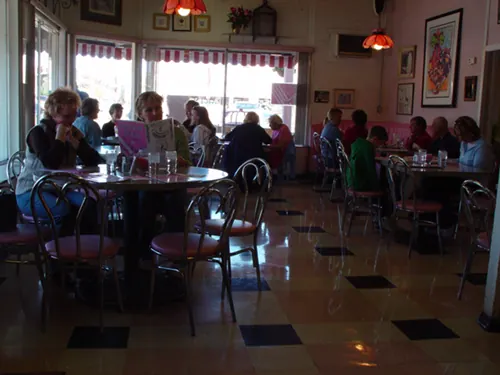

01 Dinner + galleries
Old Town Scottsdale
Galleries, pizza & ice cream







A walkable part of Old Town with restaurants, galleries, and ice cream. A good option for dinner followed by several blocks of exploring.
Food options
- Craft 64 (official website, opens in a new tab)$$
Wood-fired pizza to share.
- The Mission · Old Town (official website, opens in a new tab)$$$
Candlelit modern Latin dining.
- Sugar Bowl (official website, opens in a new tab)$
Ice cream, sundaes, and a soda fountain.
Walk around
Walk Main Street and Marshall Way through the Arts District, then head toward the Civic Center. Sugar Bowl is nearby for dessert.
The organized gallery ArtWalk is on Thursdays. On Friday, the streets are still walkable; gallery opening hours vary.